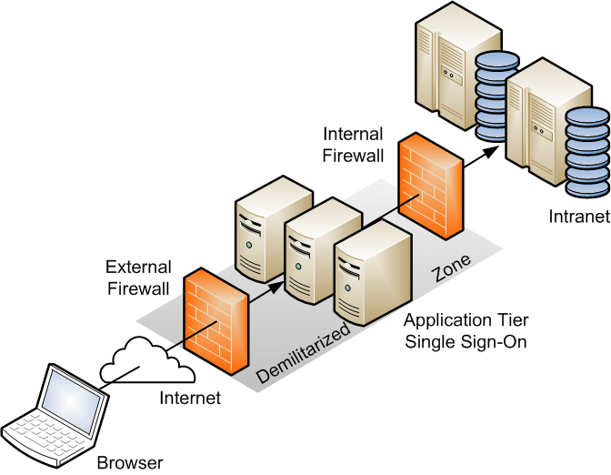

1.0 What is Firewall?#
Sophisticated security technologies must be developed at the interface between networks of different domains due to the rising complexity and width of a network. Otherwise, due to those complexity and width of the network, hackers or some can try to attack to the system and maybe even infiltrate to the system easily. In this way, they can steal the critical information, sell them, or the worse is that they can spread their attacks to the systems which are connect to the infiltrated system. The best way of ensuring interface security is the use of a firewall.
Devices or systems known as network firewalls regulate the movement of data between networks using various security stances. An organisation can stop unwanted access to the relevant systems and resources within the more sensitive regions by using firewalls to regulate connectivity to departments. The firewall is also the first line of defence for your network security measures. Your data's confidentiality, integrity, and availability are protected by a firewall.
While outside the purview of this work, the Open Systems Interconnect (OSI) model can be used to compare the characteristics of firewalls. Numerous firewalls can function on this model's multiple layers, including the Application Layer, which permits the usage of user authentication.
1.1 Types of Firewalls#
Here, three popular firewalls with their pros and cons will be briefly covered.
1. The easiest firewall to set up is packet filtering. IP addresses, subnets, TCP or UDP port numbers, and other preset specification criteria can be used by firewalls to filter packets based on packet content comparison.
The packet filter is the easiest firewall technology to set up, adding one to a router has little to no additional performance overhead, and since it functions at both the network and transport layers, it is compatible with all applications. These are the benefits of using this kind of firewall. Packet filter firewalls have a number of drawbacks, including the inability to stop attacks that use application-specific vulnerabilities since packet filter firewalls do not inspect upper-layer data. An application's commands, for instance, cannot be blocked by a packet filter firewall; if an application is allowed, the firewall will permit all of its functionalities.
Therefore, high-speed situations where logging and user authentication with network resources are not critical are a great fit for packet filter firewalls.
2. Stateful-inspection is an enhancement of the packet filter technology. This type of firewalls can also inspect the state of the packet like whether or not it is in the new connection stare or established state, or any other state. Accordingly, they can take decision.
This kind of firewall has the advantages of low overhead and high throughput. Compared to the packet filtering model, the stateful-inspection offers more security without significantly degrading performance. This kind of firewall has the following drawbacks: provides no user authentication and necessitates more administrative setup than packet filtering.
3. The proxy acts as a bridge between your internal servers and the servers on the Internet. The proxy serves as a server to clients on your internal network for incoming data. The Proxy serves as a client for outgoing data, sending information to servers on the open external network.
Benefits of this kind of firewall include the ability to execute user-level authentication and the application proxy operates at the application layer, thus providing the highest level of security and granularity. The most difficult firewall to build, the possibility of a performance bottleneck, and that proxy services may require different servers for each service are the drawbacks of this kind of firewall.
1.2 Limitations of Firewalls#
Firewalls offer unquestionable benefits in terms of network security, but they are not without restrictions. The following are some restrictions to be mindful of.
The high cost of firewalls is one of its disadvantages.
Although firewalls are installed to provide network security, they are still vulnerable to attacks. They can be defeated by direct attacks; or the easier way to “break through” a firewall is by never touching it but simply bypassing it.
A firewall is no real defense against malicious code problems like viruses and Trojan horses, although some are capable of scanning the code for telltale signs.
1.3 Firewall Environments#
The term firewall environment refers to the collection of devices and systems that work together to provide or support the complete firewall functionality at a specific network location. All that is needed in a simple firewall environment can be a packet filter firewall. It could include several firewalls, proxies, and particular topologies like star, linear bus and tree to support the systems and security in a more sophisticated and secure setting. The systems utilized in common firewall setups are described in detail in the following sections.
1.3.1 DMZ Networks#
The most popular way to build a firewall environment is through a DeMilitarized Zone network, or DMZ. A DMZ network is created out of a network connecting two firewalls. DMZ networks serve as attachment points for computer systems and resources that need to be accessible either externally or internally, but that should not be placed on internal protected networks. The firewalls could provide protection and access control for the servers, protecting them both from external and internal attack. This environment is represented in Fig. 1.
|  |
|---|
| Figure 1. Demilitarized Zone formed by two Firewalls. |
There are various benefits to using a DMZ. By adding an additional layer of security between a company's internal network and the Internet, it first aids in enhancing security. As a result, it is harder for outside threats to access an organization's internal network. Secondly, by relocating specific services, such web hosting, to a separate DMZ network, a DMZ can also benefit from the network performance. This can lessen the strain on an organization's internal network and enhance network functionality as a whole.
There are many examples of hacked DMZs. Below examples highlight the significance of having strong security and checking the DMZ frequently to find and address vulnerabilities.
The DMZ of Sony Pictures Entertainment was hacked in 2014. The hackers, who have ties to North Korea, stole sensitive information and made it public. Sony suffered significant losses as a result of the breach, and many people lost their jobs.
The US Department of Justice's DMZ experienced a hack in 2016. The hackers, who were linked to Russia, obtained personal data on employees and their families.
1.3.2 Virtual Private Networks#
Another beneficial application of firewalls and firewall environments is the creation of Virtual Private Networks (VPNs). In most circumstances, virtual private networks are used to create secure network links across untrusted networks by employing additional protocols and, in most cases, encryption.
 |
|---|
| Figure 2. Differences of a network with and without a VPN |
As depicted in Fig 2, an organization or agency can send unencrypted network traffic from systems behind the firewall to other remote systems behind a cooperating VPN gateway; the firewall encrypts the traffic and forwards it to the remote VPN gateway, which decrypts it and forwards it to the destination systems. Advanced virtual private network capabilities have a cost. For example, if VPN communication is encrypted, performance will decrease in proportion to (a) the volume of traffic flowing across the virtual private network and (b) the type/length of encryption utilized.
There are various options available to a modern virtual private network at the protocol level. The first is a group of protocols called IPSec11 (Internet Protocol Security), which is arguably the most widely utilized at the moment. The IPSec standards consist of IPv6 security features ported over to IPv4, the version of IP in use today on the Internet. Other VPN protocols in use today include the Microsoft standard PPTP (Point-to-Point Tunneling Protocol) and L2TP (Layer 2 Tunneling Protocol).
1.3.3 Intranets and Extranets#
An intranet is a network that uses the same kinds of protocols, services, and applications as an Internet implementation, but without requiring external connectivity or outside access. Many of the security issues inherent in Internet implementations also exist in intranet implementations since intranets use the same protocols and application services as the Internet. Therefore, intranets are typically implemented behind firewall environments. In Fig. 3, the internal protected networks are examples of intranet configurations.
 |
|---|
| Figure 3. VPN/Extranet Joining Two Intranets |
With the exception of the fact that they are intended to operate outside of a firewall environment, extranets and intranets almost entirely correspond in terms of features. By definition, the purpose of an extranet is to provide access to potentially sensitive information to specific remote users or organizations, but at the same time denying access to general external users and systems.
1.4 Firewall Policy#
The way a firewall handles application traffic like web, email, or telnet is determined by its policy. The policy must specify the updating and management procedures for the firewall. Firewalls without a policy can be difficult to maintain and complicated, and security issues can happen on a regular basis. The following are the steps needed to create a firewall policy:
- Identification of network applications that are deemed necessary,
- Identification of vulnerabilities related to those applications,
- Cost-benefits analysis of methods for securing the applications,
- Creation of a firewall ruleset based on the applications traffic matrix.
1.5 pfSense#
pfSense is a free and open source operating system for routers and firewalls. The majority of commodity hardware, including outdated PCs and embedded systems, can run pfSense. pfSense is commonly configured and managed via a user-friendly web interface, which simplifies administration for individuals with no networking expertise as well. pfSense is primarily used as a router and firewall software. It is configured as DHCP server, DNS server, Wi-Fi access point, VPN server, all running on the same hardware device. It can be used to run a huge corporation's whole network or even just a modest home router.
1.6 Firewall Testing#
The four processes that make up firewall testing are indirect information collection, direct information collection, attack from the outside, attack from the inside There are detail expressions about each of these processes in the sections that follow.
1.6.1 Indirect Information Collection#
At first, we aim to learn as much as we can about our target. In order to accomplish this, we first gather data in a manner that is invisible to logging or alarm systems. For this purpose, publicly available information from sources outside the network can be used. These are services to gain an idea of the targeted network's structure, such as whois or nslookup. Doing an online search is another way to find information.
1.6.2 Direct Information Collection#
Additional information that the company’s name server could have been stored on the network topology may be investigated at first. For instance, bounced mail headers can provide important information. We can send an email to a nonexistent user to obtain more details about important systems in our target network. The header of the bounced message may provide important topographic data.
1.6.3 Attack from The Outside#
This section now discusses direct attacks from the outside. Our targets include the firewall itself, as well as other specifically targeted systems such hosts that appear to be connected to the outside world but are not firewall-protected. If the firewall trusts any hosts, which is generally not the case, then this can offer us extra benefits. Possessing control over one of these systems also helps us later on when we want to attempt an IP spoofing attack. Another general concept is that we are launching our attacks from different subnets as the firewall could trust on of these addresses. For instance, an IP spoofing attack can be used in this kind of attack.
IP Spoofing#
In network intrusions IP address spoofing can be utilized, which is the use of a legitimate IP address to get around IP address-based authentication. When there are trust ties between machines, this kind of assault is most effective. Using your internet or networked system, you will establish a connection to another system, but you want to conceal the fact that you are the one connecting. You misrepresent your IP address, which is your identity in TCP/IP protocols, during the connection for this purpose. We refer to this as IP spoofing.
Using tools like Nemesis and other similar programs, the attacker spoofs his own IP packets and modifies their source IP field. Reactions corresponding to the spoofed packet cannot reach the attacker's computer since the source has been altered. It is sent to the spoofed machine. "Source routing" is a crucial method the attacker employed to get this response on his own computer.
Nemesis is a command-line network packet crafting and injection utility for UNIX-like and Windows systems. Excellent for testing firewalls, IP stacks, network intrusion detection systems, and many other activities. ARP, DNS, ETHERNET, ICMP, TCP, and UDP packets may all be natively crafted and injected by Nemesis. It is possible to create and inject nearly any custom packet using the IP and Ethernet injection modes.
1.6.4 Attack from The Inside of the Network#
The firewall in this case is the target, or more likely, the operating system that the firewall is installed on. This is now more related to host security than network security because the firewall—the target of the attack—is the host.